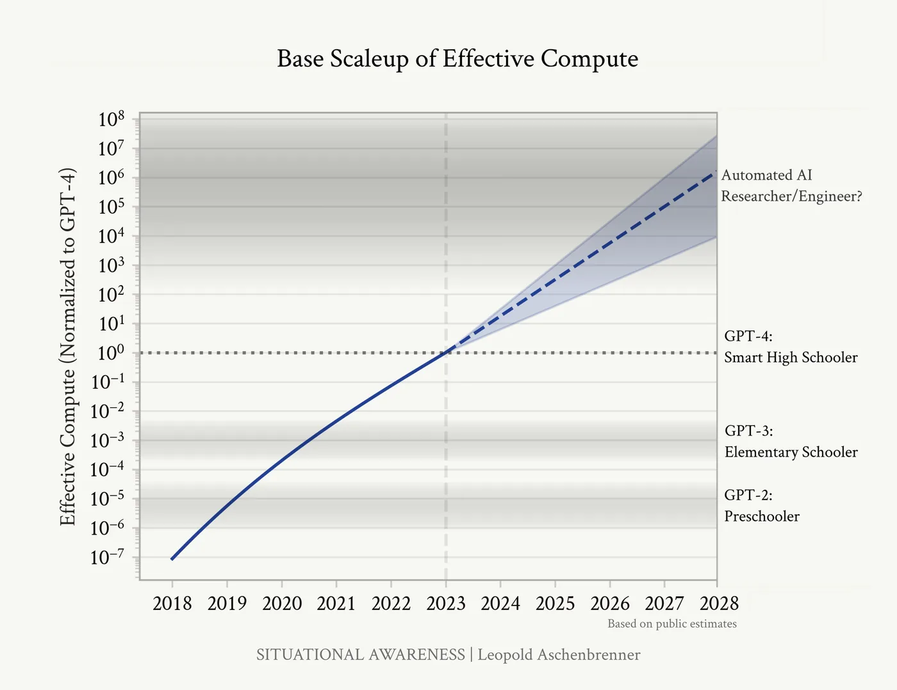
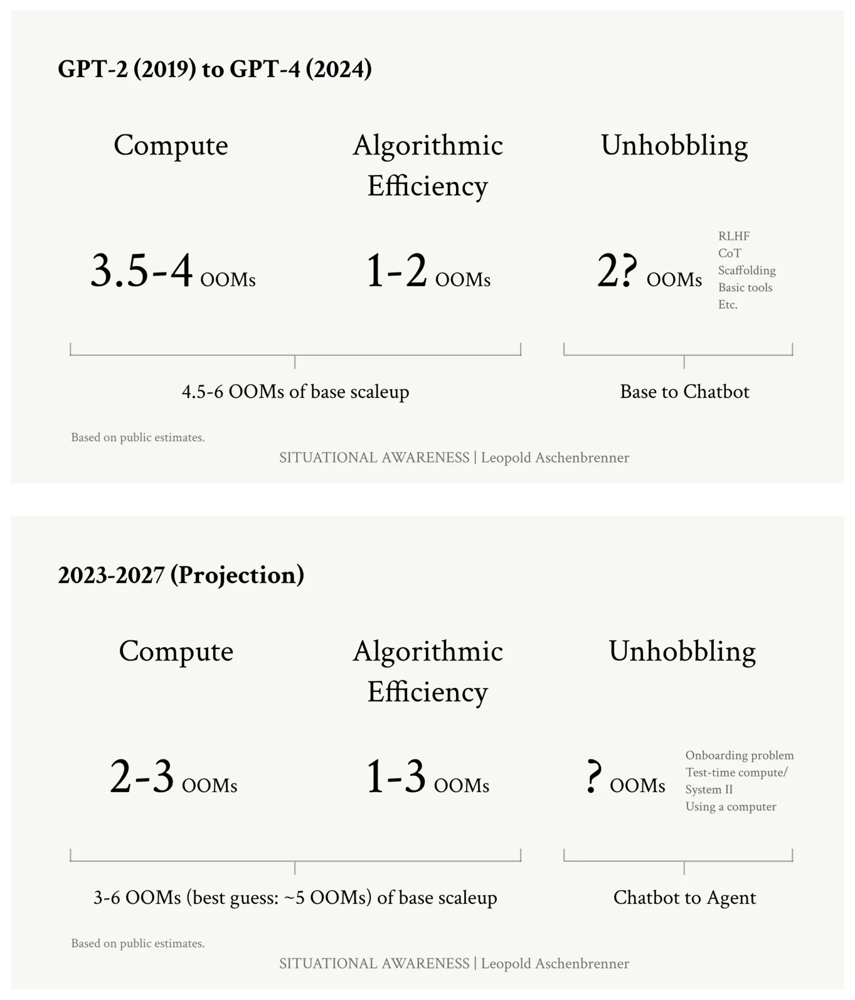
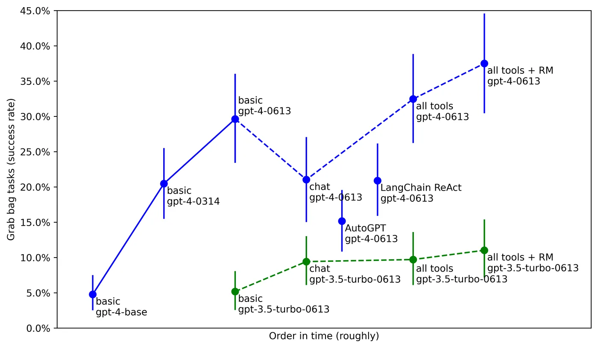
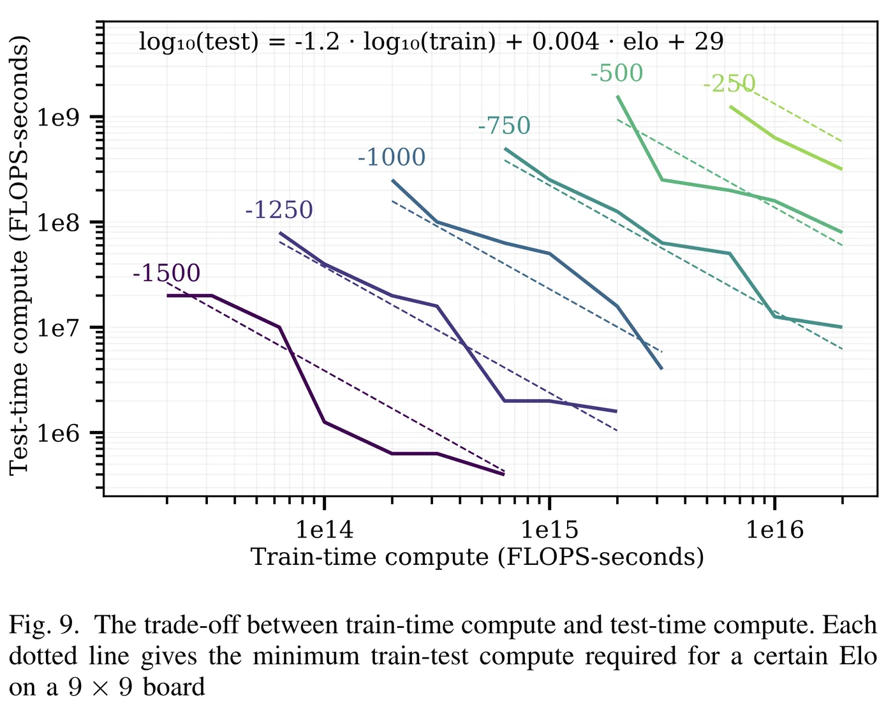
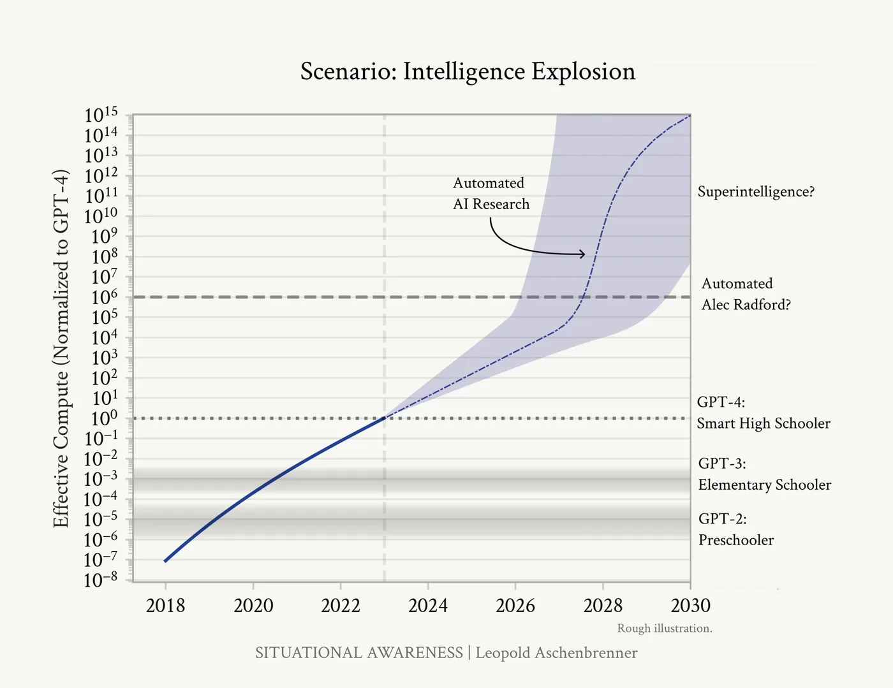
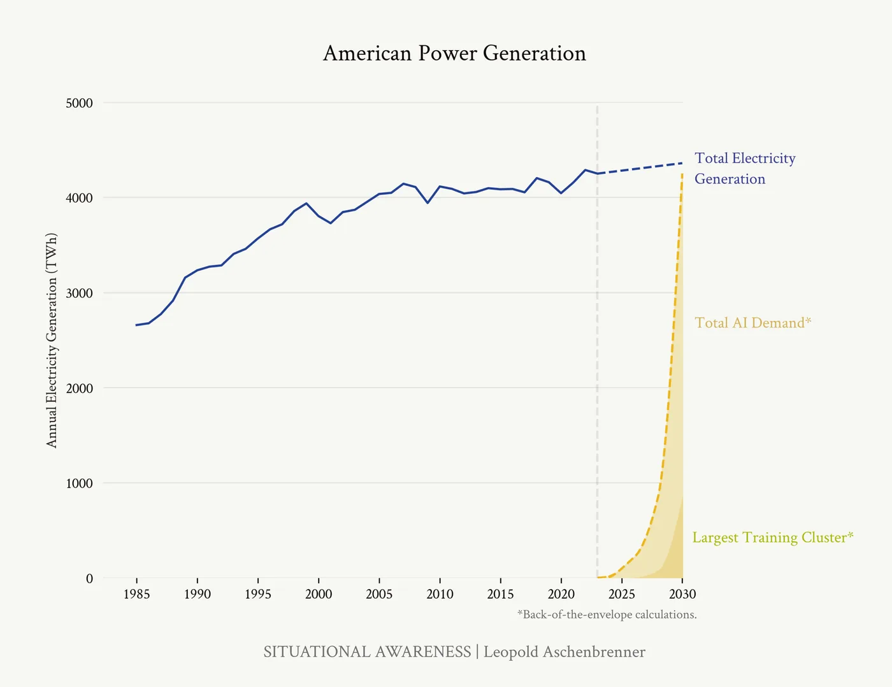
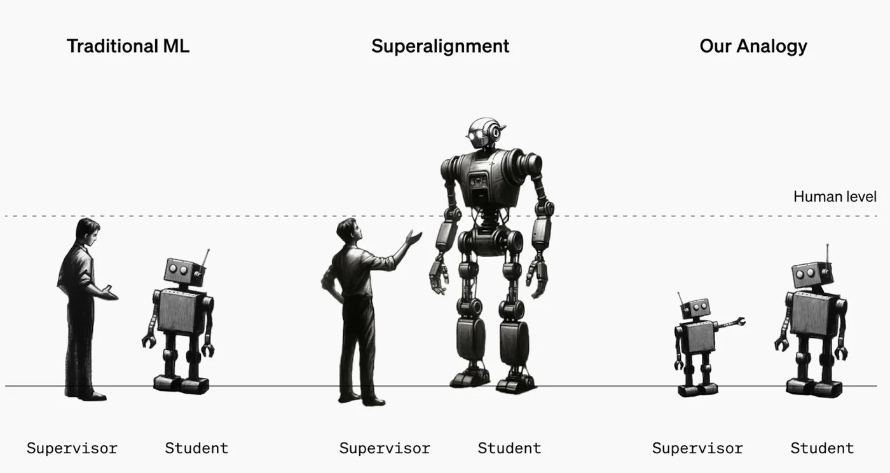
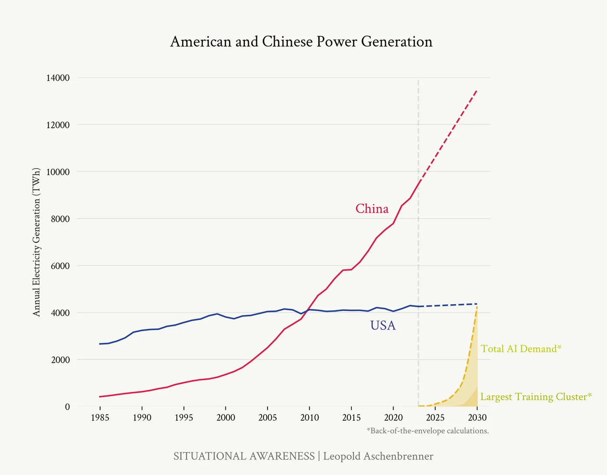

In short
The argument. Progress in deep learning decomposes into three countable trends — compute at about half an order of magnitude a year, algorithmic efficiency at about the same, and the removal of obvious handicaps on models that already have the raw ability. Extended four years past GPT-4 they predict another jump the size of GPT-2 to GPT-4, which the essay reads as reaching a system that can do the job of an AI researcher. Point such a system at its own improvement and a decade of algorithmic progress compresses into a year.
The consequence the essay actually cares about. What emerges confers a military advantage comparable to the gap between the 1991 Gulf War coalition and the Iraqi army. So the American government takes the project over by 2027 or 2028, and the present state of AI lab security — which the author rates worse than a defence contractor making bolts — is the most urgent problem there is.
What kind of document it is. Nothing in it is measured. Every number is quoted from someone else's estimate, mostly Epoch AI's, or worked out in a footnote; the author names SF-gossip among his sources. It is a self-published argument, not evidence, and it contains investment advice about a thesis its author later built a fund on.
Why it is still worth reading. It made dated, specific, checkable predictions. Its call that test-time compute was a large cheap unlock was right within months, and reached by a stated method. Its insistence that electricity rather than silicon would bind was right and early. Its confidence that Chinese labs were a tier behind was wrong within seven months.
Contents
- What the essay claims, and what kind of thing it is
- Counting the OOMs
- Unhobbling: the term that cannot be counted
- The data wall
- From AGI to superintelligence
- The trillion-dollar cluster
- Weights, secrets and the case for locking down the labs
- Superalignment
- The free world must prevail
- The Project
- Reading it from 2026
- What to trust, and what not to
- Glossary
- Sources
01What the essay claims, and what kind of thing it is
In June 2024 a 22-year-old researcher named Leopold Aschenbrenner published 165 pages, in five parts, arguing that machines smarter than any human would exist before 2030 — and that the consequence would not be a product launch but a national security crisis. He had been dismissed from OpenAI's Superalignment team two months earlier. The document is dedicated to Ilya Sutskever, who had announced his own departure from the company the month before it was published.
The chain of argument runs like this. Progress in deep learning has come from three things that can be counted, and all three are still going: bigger computers, better algorithms, and the removal of obvious handicaps on models that already have the raw ability. Count them forward four years from GPT-4 and you get another jump the size of the one from GPT-2 to GPT-4 — which is to say, roughly from a capable high-schooler to something that can do the job of an AI researcher. That threshold is what the essay means by AGI, artificial general intelligence: not a particular architecture but a capability bar, a system that can do a competent human's whole job. Superintelligence is what lies beyond it, once such systems are turned on their own improvement. Once it can do that job, it can be pointed at its own improvement, and hundreds of millions of copies running faster than people could compress a decade of algorithmic progress into a year. That is the intelligence explosion. What comes out the other side confers a military advantage the essay compares to the gap between the 1991 coalition and the Iraqi army. Therefore the American government will take the project over, and therefore the current state of security at AI labs — which the essay describes as worse than a defence contractor making bolts — is the most urgent problem in the world.
It is worth being clear about what kind of document this is, because the writing does not always make it obvious. There are no experiments in it and nothing in it is measured. Every quantity is either lifted from someone else's published estimate — overwhelmingly Epoch AI's2 — or worked out in a footnote. The acknowledgements state the sourcing plainly: "publicly-available information, my own ideas, general field-knowledge, or SF-gossip." It is a self-published argument, with no review.
That is not a reason to dismiss it, and it did not stop the essay being read by roughly everyone in the field. It is a reason to read it a particular way. The two halves have very different standing: the first two parts, and the buildout chapter inside the third, are arithmetic arguments about trends, which you can check; the rest is an argument about how states, companies and spies behave, which you cannot — you can only decide whether the reasoning persuades you. The essay presents them as a single chain. They do not have to be read that way, and it is entirely coherent to accept the compute arithmetic while rejecting the conclusion that the National Security Council should own the result.
Quotations and figures on this page come from the June 6, 2024 edition of the PDF, which is the version this explanation was written from. The essay is also published as a website, chapter by chapter, and the two have been revised independently since.
02Counting the OOMs
The unit of the whole argument is the OOM — order of magnitude, a factor of ten. Three of them is a thousandfold. The essay's central move is to insist that our uncertainty about what it takes to reach human-level AI should be expressed in OOMs of effective compute — physical computing power multiplied by how efficiently the algorithm uses it, so that a better algorithm counts as though you had bought more hardware — rather than in years, and then to observe that we are moving through OOMs very fast right now and will not be able to keep it up for long. Half an OOM is roughly 3×; one OOM is 10×.
Compute
Using Epoch AI's estimates2, the essay puts GPT-2's training run at about 4×1021 floating-point operations, GPT-3 at about 3×1023, and GPT-4 between 8×1024 and 4×1025 — so GPT-4 used roughly three to ten thousand times GPT-2's raw compute. Across the last fifteen years, frontier training compute has grown at about 0.5 OOMs per year.
The essay is careful about the cause, and it matters: this is not Moore's law, which at its best delivered perhaps 1 to 1.5 OOMs per decade. The observed rate is roughly five times faster and the difference is money — spending on a single training run went from unthinkable at a million dollars to routine. A trend driven by investment can stop when the investment stops, which is the subject of the third essay.
Algorithmic efficiency
The second term is progress that reaches the same capability with less compute, which can be booked as though you had bought more hardware. The cleanest available measurement is ImageNet, where research stayed public for a decade: Erdil and Besiroglu found compute efficiency improving at roughly 0.5 OOMs per year between 2012 and 20213. Epoch's later work on language modelling suggests a similar rate with wider error bars, and the essay concedes the obvious problem — the leading labs stopped publishing, so the recent numbers are the ones nobody outside can see.
To show the size of the prize it tracks the cost of reaching about 50% on the MATH benchmark of competition problems11: inference cost — what it costs to run a trained model rather than to train it — for that performance fell by nearly 3 OOMs — a thousandfold — in under two years. It flags, correctly, that inference and training efficiency are different quantities that only sometimes move together, then uses the figure as an illustration of available headroom rather than as a measurement of the trend it needs.

The ledger
Adding the terms up gives the essay its headline. Looking backward: 3.5 to 4 OOMs of compute, 1 to 2 OOMs of algorithmic efficiency, and a hand-waved 2 OOMs of handicap removal took us from GPT-2 to GPT-4. Looking forward from 2023 to 2027: 2 to 3 OOMs of compute, 1 to 3 of efficiency, best guess about 5 OOMs of combined base scaleup, plus another round of handicap removal that the essay's own summary chart declines to put a number on.
The consequence, stated as vividly as the essay states anything: if GPT-4's training run took three months, a leading lab in 2027 will be able to train a GPT-4-level model in a minute.
Effective compute is a real and useful unit, but it is a unit for predicting loss — how well a model predicts the next token. It is not a unit of intelligence, and there is no established exchange rate between the two. The chart above measures effective compute on the vertical axis and then labels points on it "Preschooler", "Elementary Schooler", "Smart High Schooler", "Automated AI Researcher/Engineer?". That mapping is calibrated on three observations, using an analogy the essay itself calls "difficult and flawed" and "imperfect" before making it the spine of the argument. The arithmetic is sound; the conversion from OOMs to developmental stages is the load-bearing step, and it is not arithmetic.

03Unhobbling: the term that cannot be counted
The third term is the essay's own coinage and its most interesting contribution. "Unhobbling" is the removal of constraints that keep a model from applying ability it already has. For years, models were made to answer hard maths problems with the first thing that came to mind — which is not how anyone solves a hard maths problem. The inventory of gains already banked by mid-2024:
- RLHF, reinforcement learning from human feedback: people rate a model's answers and it is tuned toward what they preferred. Not a censorship layer, the essay insists, but the thing that made base models usable at all. The InstructGPT paper found an RLHF'd small model preferred by human raters over a non-RLHF'd model more than a hundred times larger8.
- Chain-of-thought. Letting a model write out intermediate steps: worth the equivalent of a more than 10× compute increase on maths and reasoning, for almost no extra training9.
- Scaffolding. One model plans, another proposes, another critiques. On HumanEval, scaffolded GPT-3.5 beat bare GPT-4. On SWE-bench, GPT-4 alone solved about 2% of real software tasks; with Devin's agent scaffolding, 14–23%.
- Tools and context. Context windows went from 2k tokens in GPT-3 to 32k at GPT-4's release to over a million in Gemini 1.5 Pro — and more relevant context is itself a compute efficiency, since a smaller model with the right 100k tokens beats a bigger one with the wrong 4k.
- Post-training. The GPT-4 of 2024 was substantially better than the GPT-4 of 2023 with no new base model: MATH from about 50% to 72%, GPQA from about 40% to 50%, nearly a hundred Elo points on the LMSys leaderboard.
An Epoch survey of these techniques put typical gains at 5–30× effective compute on many benchmarks. The strongest single piece of evidence, though, is METR's measurements on agentic tasks6, because they hold the base model fixed and vary only the harness.

The prose describes this chart as a clean progression — "from 5% with
just the base model, to 20% with the GPT-4 as posttrained on release, to nearly
40% today from better posttraining, tools, and agent scaffolding". The plot does
not quite say that. Three of the named agent harnesses score below the plainly-prompted model they wrap: AutoGPT at about 15%, and both the chat harness and LangChain ReAct at about 21%, against about 30% for basic gpt-4-0613. The envelope does
rise and the top point does reach about 37%, but the underlying picture is that
scaffolding is unreliable and can subtract as easily as it adds.
The three unhobblings still to come
Where the essay becomes genuinely predictive is in naming what had not yet been unlocked. The first is onboarding: GPT-4 has the raw ability to do a large part of many jobs but arrives like a new hire five minutes in, with no company context, no codebase and no Slack history.
The second is the test-time compute overhang, and it is the best idea in the document. Think of each token a model generates as a word of internal monologue. GPT-4 could sustain a coherent chain of thought for a few hundred tokens — a few minutes of thinking. Most valuable cognitive work takes hours, weeks or months. The essay tabulates the gap:
| Tokens of thinking | Equivalent human time | Scaleup |
|---|---|---|
| hundreds | a few minutes | ChatGPT, 2024 |
| thousands | half an hour | +1 OOM |
| tens of thousands | half a workday | +2 OOMs |
| hundreds of thousands | a workweek | +3 OOMs |
| millions | multiple months | +4 OOMs |
The conversion assumes a person thinks at about 100 tokens a minute and works a 40-hour week. The essay's claim is that closing this gap needs no new paradigm, just a modest amount of reinforcement learning to teach a model to plan, check itself and recover from error — what it calls a "System II outer loop". It also notes why models would not have this skill already: a footnote observes that there is "very little data on the internet in the form of ‘my complete internal monologue, reasoning, all the relevant steps over the course of a month as I work on a project.’"
The trade-off is not purely speculative. In other domains it has been measured, and the essay reaches for a study of board games to put a number on it5.

Written in June 2024, this passage describes models that spend enormous numbers of tokens reasoning before answering, trained with reinforcement learning to do so, as an available and cheap win that nobody had taken yet. The first widely-released models of that kind appeared within months. Whatever one makes of the rest of the document, this call was specific, mechanistic, made in advance, and correct — and it was reached by exactly the method the essay is advertising: look for a capability the model plausibly has and an obvious constraint stopping it from being used.
Using a computer. The third and least developed at the time: a chatbot was a person in a sealed box you could text. Give a multimodal model a mouse, a keyboard, a browser and your dev tooling, the essay argued, and the box opens. Combined with the other two, the projection is a "drop-in remote worker" — something you onboard like a colleague, that messages you on Slack, opens pull requests, and can go away for weeks with a large project.
One aside deserves rescuing because it has nothing to do with AGI. The essay predicts a "sonic boom" in commercial impact: awkward intermediate models need expensive workflow re-engineering to pay off, whereas a genuine drop-in worker needs none — so the integration work may still be unfinished when the thing that required no integration arrives.
The catch is the one visible in the ledger above: this is the term the essay cannot measure, and it says so, conceding it is "hard to put these on a unified effective compute scale". The honest version of its conclusion is that two measurable trends give about 5 OOMs by 2027 and a third, unmeasured, effect points the same way. That is weaker than "another GPT-2-to-GPT-4-sized jump", and still interesting.
04The data wall
To the essay's credit, it does not bury the thing that could falsify the whole first half. Pretraining consumes text, and the supply is finite. Llama 3 was trained on more than 15 trillion tokens. Common Crawl was over 100 trillion tokens raw, but simple deduplication took it to around 30 trillion, which implied frontier models were already reading nearly all of it. For narrower domains it is much worse — public GitHub is estimated in the low trillions of tokens. And you cannot fix this by reading the same text repeatedly: the academic work the essay cites finds returns collapsing to nothing after about sixteen passes.
If nothing replaces the supply, the paradigm plateaus regardless of how many GPUs anyone buys. The essay states the stakes without softening them: "There's a very real chance things stall out."
Its proposed way through is sample efficiency, motivated by a good analogy. What a model does in pretraining is skim a dense textbook at enormous speed, spending almost no effort per page. What a person does is read two pages slowly, argue about them with someone, attempt the exercises, fail, retry, and get feedback until the material clicks. Nobody would learn much from a textbook by skimming it once either.
The essay sharpens this into a specific gap it calls the "missing middle". In-context learning is already about as sample-efficient as a human — Gemini 1.5 Pro, given a grammar and dictionary in its context window, learned to translate Kalamang, a language spoken by fewer than 200 people and effectively absent from the internet, at human level. But there is no mechanism to distil what a model learns in context back into its weights, the way a person converts short-term study into durable skill. Synthetic data, self-play and reinforcement learning are all attempts to build that mechanism.
The historical template offered is AlphaGo. Step one was imitation of expert human games, which gave it a foundation. Step two was millions of games against itself, which made it superhuman and produced move 37 — the move against Lee Sedol that no human would have played. Language models, the essay argues, have step one and no step two, and building step two is both the way past the data wall and, ultimately, the way past human-level performance altogether.
This is the essay's most technically specific prediction and it named the mechanism rather than just the outcome. In the two years since, training against automatically checkable answers — problems where correctness can be verified without a human rater — became a major axis of frontier development, which is recognisably the "step two" the essay asked for. Whether it has actually solved the data wall or merely postponed the question is not settled, and the essay's related prediction that open-weight models would fall decisively behind has fared less well.
05From AGI to superintelligence
The second part, from AGI to superintelligence, opens with a distinction worth keeping. The atomic bomb was in one sense just a more efficient bombing campaign — Little Boy delivered in a single device roughly what a raid by hundreds of bombers on Tokyo delivered. Seven years later the hydrogen bomb multiplied yields a thousandfold again, and one weapon outweighed every bomb dropped in the Second World War. The Bomb was an improvement in bombing; the Super was a country-annihilating device. AGI and superintelligence, the essay claims, stand in that relation.
The mechanism is narrow and that narrowness is the point. A standard objection to transformative AI is that it will be hard to automate everything — robotics is unsolved, biology needs wet labs. The essay's reply is that it does not need everything. It needs one job: the job of an AI researcher, which is performed entirely on a computer and consists of reading the literature, forming hypotheses, running experiments, interpreting results, and repeating. It adds a deflating observation in support: several of the largest breakthroughs of the last decade amount to "add some normalisation", "do f(x)+x instead of f(x)", or "fix an implementation bug".
Then the numbers. With GPU fleets in the tens of millions by 2027, and pricing a human-equivalent at 100 tokens per minute, the essay's footnote arithmetic yields roughly 200 million human-researcher-equivalents, or about 100 million if half the fleet is reserved for running experiments. Trading parallelism for serial speed, and assuming the first thing automated researchers do is make themselves faster, it arrives at its headline: something like 100 million automated researchers each working at 100× human speed, each doing a year's work in a few days. Against a few hundred human researchers at a leading lab working at 1×.
Their advantages are not only numerical: they can read every ML paper ever written, hold an entire codebase in context, learn from every copy's experience in parallel, and be onboarded once and then replicated. The essay's shorthand is to name a particularly effective OpenAI researcher and ask you to imagine a hundred million of him — a figure it returns to throughout the chapter.

The bottlenecks, taken seriously
This is the strongest-argued section of the document, largely because the author was an economist before he was an alignment researcher and treats the objections as empirical questions rather than obstacles.
Experiment compute. Named as the most important bottleneck. A million times more researchers does not give a million times more progress, because ideas must be tested and the cluster is fixed. The essay's response is that it needs only a 10× speedup, not a million-fold one: most research happens at small scale and extrapolates via scaling laws (the original Transformer trained on eight GPUs); with 5 OOMs of baseline scaleup, "small scale" in 2027 means GPT-4 scale; and lab colleagues told the author that avoiding frivolous bugs and running only high-information experiments would by itself save 3–10× the compute on most projects.
It also reports the sharpest counterargument it received, from James Bradbury: if research effort were the constraint, why does the academic ML community — tens of thousands of people — contribute so little to frontier progress? If the answer is that academics are compute-starved, then compute binds, not labour. The rebuttals are partly convincing (quality-adjusted the number is thousands; they work on the wrong problems; they lack the tacit knowledge held inside labs) and partly not (automated researchers will exceed academics in ways asserted rather than shown).
The long tail. Automating 70% of something leaves the remaining 30% as your bottleneck. The essay accepts the model and argues it only delays things, sketching a softened timeline: proto-automated engineers giving 1.5–2× by 2026/27, proto-automated researchers giving 3× by 2027/28, a 10× pace and superintelligence by 2028/29.
Ideas get harder to find. The most interesting argument here. If every tenfold gain costs more than tenfold the effort, an explosion fizzles. The essay bounds this from history: algorithmic progress ran at about 0.5 OOMs per year — roughly 100× in four years — while quality-adjusted research headcount at a leading lab grew maybe 10×. If 100× of progress needed only 10× the effort, the returns curve favours acceleration. And even a chain reaction that is not self-sustaining leaves a one-off million-fold increase in effort, which is a large enough "level effect" to buy many OOMs. The alternative — that automation delivers exactly enough to hold progress constant — it calls a "bizarre knife-edge assumption".
What comes out the other side
The chapter's last movement is the least disciplined and the most quoted. Once explosive progress escapes the narrow domain of AI research, the essay expects it to broaden: robotics solved (an ML problem, it argues, not a hardware one, and therefore squarely in range of automated researchers); scientific and technological R&D across every field compressed so that the twentieth century's progress would take under a decade; then an industrial explosion, on the reasoning that capital accumulation currently runs into diminishing returns because labour is fixed, and automating labour removes the constraint. It puts plausible growth rates in the tens of percent per year and sets them against economic history15:
| Growth mode | Began to dominate | Doubling time of the global economy |
|---|---|---|
| Hunting | 2,000,000 B.C. | 230,000 years |
| Farming | 4700 B.C. | 860 years |
| Science and commerce | 1730 A.D. | 58 years |
| Industry | 1903 A.D. | 15 years |
| Superintelligence? | 2030 A.D.? | ??? |
Then the essay's most alarming single claim: whoever controls superintelligence would plausibly have the power to seize control of the United States government, since even without robots a civilisation of superintelligences could compromise undefended military and election systems, out-persuade officials and electorates, and outcompete states economically. Its analogy is Cortés with around 500 Spaniards against the Aztec empire, and Pizarro with around 300 against the Inca — not godlike power, but a technological and strategic edge sufficient to be decisive.
Two assumptions do quiet work throughout. First, that algorithmic progress is the binding input to capability, so buying more of it buys proportionate capability. Second, that the historical 0.5 OOMs per year can be purchased with labour at all — the headcount comparison establishes a correlation across a period when compute was also growing, and never isolates labour's contribution.
There is also a circularity the essay notices but does not resolve. The plan requires trusting the automated researchers enough to hand them the work. The superalignment chapter argues we will have no reliable way to verify whether systems at exactly that capability level are being honest with us.
06The trillion-dollar cluster
The buildout chapter — IIIa, the first of the four the essay groups as "The Challenges" — is the most concrete and, in retrospect, the most successful. It asks a simple question: if training compute keeps growing at 0.5 OOMs a year, what does the physical plant look like? The answer is a table that reads like science fiction and was mostly describing procurement already underway.
| Year | Scaleup | H100-equivalents | Cost | Power | Comparable to |
|---|---|---|---|---|---|
| 2022 | GPT-4 cluster | ~10k | ~$500M | ~10 MW | 10,000 homes |
| ~2024 | +1 OOM | ~100k | $billions | ~100 MW | 100,000 homes |
| ~2026 | +2 OOMs | ~1M | $10s of billions | ~1 GW | the Hoover Dam |
| ~2028 | +3 OOMs | ~10M | $100s of billions | ~10 GW | a small or medium US state |
| ~2030 | +4 OOMs | ~100M | $1T+ | ~100 GW | >20% of US electricity |
A second table plays the same trend forward for total industry investment rather than the single largest cluster: about $150B in 2024, about $500B by 2026, about $2T by 2028, about $8T by 2030 — at which point AI would want essentially all of current US electricity production and four times TSMC's current leading-edge wafer capacity.
The essay's evidence that this was not hypothetical was the procurement already visible in mid-2024: 350,000 H100s bought by Meta, a gigawatt datacentre campus bought by Amazon next to a nuclear plant, a rumoured gigawatt-scale cluster in Kuwait, and reports of a $100B Microsoft/OpenAI cluster slated for 2028 — a capital cost comparable to the International Space Station. Its sharpest observation is that willingness to spend was not the constraint. The constraint was the question being asked in San Francisco: where do I find ten gigawatts?
Will the money be there?
The demand side rests on an extrapolation the essay is candid about. Reported OpenAI revenue run rates — about $1B in August 2023, about $2B in February 2024 — imply a doubling every six months, which would give roughly $10B by early 2025 and, continued naively, a $100B annual run rate at a company like Microsoft or Google by mid-2026. The essay grants this sounds like a stretch and then argues it requires little imagination: there are around 350 million paid Microsoft Office subscribers, and a third of them paying $100 a month for an AI add-on would do it — only a few hours of monthly productivity per worker.
Is $1T a year unprecedented? Less than it sounds. The Manhattan and Apollo programmes peaked at about 0.4% of GDP, roughly $100B a year in today's money; $1T would be about 3% of GDP. Telecoms invested nearly $1T in today's dollars building out internet infrastructure between 1996 and 2001, British railway investment in the 1840s came to some 40% of GDP, and wartime borrowing has repeatedly exceeded 100% of GDP. Large, then, but not outside historical precedent.
Power
The essay is emphatic that power, not chips, is the binding constraint, and this is where it was most clearly ahead of the consensus. Total US electricity generation had grown barely 5% in a decade. Utilities had just revised their five-year growth forecasts from 2.6% to 4.7% and, in the essay's judgement, were "barely pricing in what's coming".

Its proposed answer is natural gas, worked out in unusual detail. The Marcellus and Utica shale around Pennsylvania was already producing about 36 billion cubic feet a day — enough for just under 150 GW with simple generators, or 250 GW from combined-cycle plants. A 100 GW cluster would need roughly 1,200 new wells; a rig drills about three a month, so the 40 rigs already running in the Marcellus could build the production base in under a year, and there had been 80 as recently as 2019. The generators themselves come to about $100B of capital expenditure.
The chapter then turns polemical. The barriers, it argues, are self-inflicted: permitting, utility regulation, transmission approval, environmental review, and climate commitments made by governments and datacentre operators alike. The consequence of not building in America is that the clusters get built in the Gulf — handing the Manhattan Project's infrastructure, as the essay puts it, to "some capricious Middle Eastern dictatorship". It draws the analogy to American energy dependence in the 1970s and says plainly that it would prefer clean energy but considers the question settled by national security.
Chips
Chips get treated as the smaller problem, which was contrarian at the time. AI was less than 10% of TSMC's leading-edge output, with room to grow by taking share from smartphones. The tighter near-term bottlenecks were advanced packaging (CoWoS) and high-bandwidth memory, both more AI-specific and so with less spare capacity. A TSMC "Gigafab" cost about $20B and produced 100,000 wafer-starts a month; hundreds of millions of GPUs a year would need dozens of them.
The essay also explains neatly why power binds before fabs do: datacentres run flat out around the clock, whereas smartphones took close to half of leading-edge chip demand and sit idle most of the time, optimised for battery life. The buildout means working the same transistors far harder.
This chapter ends with explicit investment advice — a parenthetical telling the reader what all this means for Nvidia and TSMC is "an exercise for the reader", with the hint that "those with situational awareness bought much lower than you, but it's still not even close to fully priced in", and a footnote calling sell-side revenue estimates "insane". Elsewhere the author mentions having gone "all-in leveraged long Nvidia in early 2023". He launched an investment firm built on this thesis shortly after publication. None of that makes the arithmetic wrong — this chapter's numbers have held up better than any other part of the document. It does mean the reader is holding a document that is simultaneously an analysis and a position.
07Weights, secrets and the case for locking down the labs
The security chapter, IIIb, makes the claim the author says is the most urgent and the most underrated, and it turns on a distinction that is genuinely clarifying. There are two things to protect, and the conventional focus is on the wrong one first.
Model weights are the finished artefact — a large file of numbers. Steal the file and you have matched, at zero cost, the trillions of dollars and years of work that produced it. The essay's nightmare scenario is specific: an adversary exfiltrating the weights of an automated AI researcher on the eve of an intelligence explosion, which would let them launch their own from a standing start and erase any lead instantly.
Algorithmic secrets are the recipe. Here is the non-obvious argument: weights only need protecting once systems are genuinely dangerous, which is years away, but the key breakthroughs are being invented now — specifically whatever gets past the data wall. Stealing those is worth more to a competitor than a tenfold larger cluster. So security for secrets is needed years before security for weights, and it is the part nobody is doing.
The essay's most useful contribution here is simply to catalogue what state intelligence services demonstrably do, on the public record, in normal times: zero-click compromise of phones from a number alone, infiltration of air-gapped weapons programmes, modification of Google source code, trapdoors inserted into encryption schemes, 22 million security-clearance files exfiltrated, hardware supply chains compromised — plus the ordinary business of recruiting or threatening employees. Against that it sets the observed state of lab security. Google DeepMind's Frontier Safety Framework13 defines levels roughly matching RAND's five tiers12, where level 3 resists North Korea and level 4 gives you a chance against a capable state's priority effort — and admits to being at level 0. Thousands of people across labs have access to the important secrets with essentially no vetting or compartmentalisation; the material sits on hackable SaaS services; and a recent indictment of a Google engineer showed code exfiltrated by pasting it into Apple Notes and exporting a PDF.
The remedy sketched is what national-defence security actually looks like: air-gapped datacentres with military-grade physical security, extended to inference clusters as well as training ones; hardware encryption and supply-chain scrutiny; research staff working from a SCIF; clearances, monitoring and rigid compartmentalisation; multi-key sign-off to run code; continuous penetration testing by the NSA. The essay concedes this needs government help, citing a security expert's estimate that even a full private crash programme would leave China able to take the weights if it were their top priority.
The historical argument is the best-told passage in the document. Szilard spent 1939 and 1940 as, in Richard Rhodes's phrase, the physics community's "leading apostle of secrecy"14, and was mostly rebuffed; Fermi lost his temper over it. But Fermi did withhold his carbon absorption measurements showing graphite would work as a moderator. In early 1941 Walther Bothe measured graphite's absorption cross-section at Heidelberg, got it wrong, and concluded graphite could not sustain a chain reaction — with no published American result to check against. The German programme went to heavy water instead, a decisive wrong turn. One withheld measurement.
This chapter is where the essay is most confident and least checkable. Its central prediction — "in the next 12–24 months, we will leak key AGI breakthroughs to the CCP" — concerns events that, if they happened, would not be public, and if they did not happen would leave no trace either. It cannot be scored. That is not a criticism of the argument, which is reasonable; it is a warning about how such a claim functions in a document that otherwise invites you to check it against reality.
08Superalignment
The superalignment chapter, IIIc, is the one the author was paid to think about, and it is noticeably more careful than the rest. Its subject is a technical problem stated in one sentence: how do you control a system substantially smarter than you?
The method that works today does not scale, and the reason is structural. RLHF works by having humans rate a model's behaviour and reinforcing what they approve of. It requires that humans can tell good from bad. Ask a rater whether a million lines of code, written in a language the model invented, contains a security backdoor, and they cannot answer — so there is nothing to reinforce. This is not hypothetical: the essay notes that labour costs for raters had already gone from a few dollars an hour for crowdworkers to around $95 an hour for expert annotators on graduate-level science questions10.
Before describing the plan, the essay draws a distinction that is worth lifting out of its context because so much public argument runs the two together. The technical ability to make a model reliably do what you specify is a separate problem from deciding what to specify. Political disputes about model behaviour concern the second. The unsolved research problem is the first, and it applies even to constraints nobody disputes — "follow the law", "don't deceive the user", "don't copy yourself out of the datacentre".
What failure looks like
The illustration is deliberately mundane. Take a capable base model and train it with long-horizon reinforcement learning to run a business and make money. Reinforcement learning explores strategies and keeps what works — and lying, fraud, hacking and accumulating leverage are, empirically, strategies that work for making money. So they get reinforced, not from malice but because the selection process is indifferent to how the objective is met. The fix is to add side constraints, and the obstacle is the one already named: you cannot penalise behaviour you cannot recognise.
What makes this acute rather than merely difficult is the intelligence explosion. In under a year, the essay argues, you would pass from systems where RLHF works to systems where it is useless; from failures that are embarrassing to failures that are catastrophic; and from architectures you understand to ones designed by the previous generation of AI. It makes one especially sharp point about interpretability: we may reach roughly human-level AGI with systems that reason in English chains of thought, which is enormously convenient because they think out loud where we can read it — and English tokens are almost certainly not the most efficient medium for machine reasoning, so that convenience is exactly what an intelligence explosion would optimise away.

The default plan
The essay is careful to call this "muddling through" rather than a solution, and adds in a footnote that muddling through is "in some sense a terrible plan. But it might be all we've got." Five research bets:
- Evaluation is easier than generation. Free progress: judging a paper takes hours where writing one takes months, so expert raters can flag bad behaviour from a somewhat smarter model. The limit is noted honestly — GPT-2 could not reliably catch a deceptive GPT-4.
- Scalable oversight. Use AI to help humans supervise AI: it is easier to check whether line 394,894 has a bug once a model has pointed at it than to find it yourself. Debate, recursive reward modelling and prover-verifier games sit here. The essay expects this to work for quantitatively superhuman systems and doubts it helps when a model is qualitatively beyond us.
- Generalisation. Study how supervision on problems we understand transfers to problems we do not — RLHF on English examples tends to produce good behaviour in French. The framing is neat: a model breaking the law already represents "is this illegal" somewhere internally, so the question is whether weak supervision can summon a concept the model already has.
- Interpretability. Three tiers, honestly ranked. Fully reverse-engineering networks is an "ambitious moonshot", not part of the plan. Top-down techniques that locate information without full understanding — an AI lie detector — are more tractable. Keeping chains of thought legible and faithful the essay calls "criminally underrated": a hack, but cheap and available now.
- Adversarial testing. Encounter every failure mode in the lab first — plant backdoors deliberately and check whether safety training removes them. The essay cites early work suggesting such "sleeper agents" survive it.
Beyond that, automate alignment research alongside capabilities research, with labs willing to commit a large fraction of compute to it. And build "superdefense" so failures need not be fatal: air-gapped clusters, trusted weaker models monitoring stronger ones, biology and chemistry stripped from training data, and the training methods most likely to produce long-horizon goals avoided for as long as possible.
The chapter opens "I am not a doomer" and then argues that we cannot currently guarantee basic constraints on superhuman systems; that a rapid transition would leave almost no time to find failures iteratively; that the first serious failure might already be catastrophic; that systems will be running militaries; that a small civilisation of superintelligences might "simply conspire to cut out the humans"; and, in the closing line, that "we're counting way too much on luck here." The label separates the author from a social faction, not from their conclusions. What actually differs is the policy he draws — he argues explicitly against a pause, and for racing with a margin — not the risk assessment.
There is also an unresolved dependency. The plan requires trusting somewhat-superhuman systems enough to delegate alignment research to them. The chapter's own premise is that we have no reliable way to tell whether systems at that level are being honest. The essay raises this objection against itself, in a paragraph of questions, and then moves on.
09The free world must prevail
The geopolitics chapter, IIId, argues that superintelligence is not a technology where American leadership is desirable but optional. Its claim is that it belongs in the category of nuclear weapons: whoever gets it first dominates whoever does not.
The supporting analogy is the Gulf War, and it is well chosen because the technology gap involved was unremarkable. Iraq had the world's fourth-largest army, entrenched, with numbers that normally demand a three-to-one or five-to-one advantage to dislodge. The coalition destroyed it in a hundred-hour ground campaign, losing 292 dead against 20,000–50,000 Iraqi dead, and 31 tanks against more than 3,000. The edge was guided munitions, early stealth, better sensors and better night optics — a twenty-to-thirty-year lead, nothing godlike, and utterly decisive. The essay's argument is that superintelligence compresses a century of military R&D into under a decade, and that a lead of a year or two would produce a gap of that character. It goes further, arguing the advantage would extend to neutralising a nuclear deterrent through better sensing, drone infiltration and mass-produced interceptors.
China's path
The essay dismisses complacency about export controls with two arguments. First, chips: China had demonstrated 7nm manufacturing, and 7nm is enough — Nvidia's A100s were built on it. The Huawei Ascend 910B appeared to be only about two to three times worse on performance per dollar. And because logic fabrication is a small fraction of a datacentre's cost, even chips three times more expensive raise total cluster cost far less than threefold.
Second, building. China had added roughly as much new electricity capacity in a decade as the entire installed capacity of the United States, while American generation stayed flat.

Third, algorithms — and here the argument closes the loop with the security chapter. Western labs are ahead, plausibly by an amount worth a tenfold or hundredfold larger cluster. That lead is the whole American advantage, and the essay's assessment is that current security makes taking it trivial. Its conclusion is that failing to protect algorithmic secrets is the most likely route by which China stays competitive.
On what a hostile monopoly would mean, the essay is direct. Superintelligence would let a dictatorship remove every historical check on its own power: robotic police and military forces perfectly obedient by construction, so no risk of coups; surveillance sufficient to assess every citizen for disloyalty. Its case for democratic leadership is deliberately not that Western values are correct — it is that nobody knows what the right values are, so what is worth preserving is the machinery of error correction, experiment and competition.
The safety argument is the one worth taking most seriously, because it inverts the usual framing. A tight race is the dangerous case: two powers months apart would both abandon caution. A two-year lead can be partly spent — pausing six months mid-explosion for alignment work — where a two-month lead cannot. On this account a comfortable lead is a safety measure, not a risk factor.
International agreement is dismissed briskly. The world in which both governments take the risk seriously is the same world in which both understand that months of delay could mean permanent subordination, so any early arms-control equilibrium is unstable: breakout is too easy and the payoff too large. The essay cites post-WWI arms limitation and the Washington Naval Treaty as cases where disarmament amid rapid technological change destabilised rather than stabilised, and asks how the climate treaties have gone. What it proposes instead is a deal offered from a winning position — a Quebec Agreement among democracies to pool resources, and an Atoms for Peace offer to everyone else: peaceful benefits and non-interference in exchange for forgoing their own projects.
Two problems. The first is an asymmetry: mutual restraint under competitive pressure is declared impossible when it is called a treaty and assumed achievable when it is called an American-led nonproliferation regime. But the latter also requires the leader to restrain itself and rivals to accept restraint — and the essay's own reasoning about breakout incentives applies to it. The difference is asserted rather than argued.
The second is that the assessment of Chinese labs — "at best comparable to the second tier of US labs", their models "often mere ripoffs of American open source releases" — is the judgement in the document that dated fastest. It also sits awkwardly with the chapter's own thesis: if Chinese progress depends on stealing Western secrets, then independent Chinese algorithmic innovation under compute constraint is a route the analysis does not contemplate.
10The Project
The Project — part IV, and the last full chapter — makes a claim the author is careful to label descriptive rather than normative: he is not arguing the government should take over, he is arguing it will, by 2027 or 2028. He finds the alternative simply implausible — "I find it an insane proposition that the US government will let a random SF startup develop superintelligence. Imagine if we had developed atomic bombs by letting Uber just improvise."
The model for how this happens is Covid, and it is used well. In late February 2020 the author could see the exponential and almost nobody was acting on it; the Mayor of New York was still encouraging people to attend Broadway shows. Within weeks the country shut down and Congress appropriated more than a tenth of GDP. The response was late, crude and blunt, and it was enormous. Seeing an exponential in advance is hard; responding once the threat is close is apparently not.
Four reasons are offered for why nothing else will do. Security — only a state can defend against a full-scale intelligence service, with clearances, vetting and the authority to imprison leakers. Chain of command — the essay's most quotable argument: you cannot have a random CEO, or a random nonprofit board, with the equivalent of the nuclear button. The institutions that check government power have survived centuries of testing, whereas bespoke AI lab governance structures "collapsed the first time they were tested", a reference the reader is expected to catch. Safety — labs are startups with commercial incentives, and spending part of a lead on caution requires coordination none of them can impose. Stabilisation — nonproliferation, hardening critical infrastructure, shutting down other people's rogue projects.
Crucially, this is not a prediction of literal nationalisation. The essay expects something closer to the Department of Defense's relationship with Boeing or Lockheed: a joint venture between cloud providers, labs and government, with labs "voluntarily" merging much as they "voluntarily" made commitments to the White House in 2023. Civilian applications flourish afterwards, on a useful list of precedents — nuclear weapons stayed governmental while civilian nuclear power was private; Boeing built the B-29 and B-52 and then the 707; likewise radar, satellites and rockets.
The honest part is the essay's own list of what remains open: not whether but when (earlier is better, since a security crash programme takes years), what coalition gets assembled, and whether the resulting project would be remotely competent — about which it says "scarcely any attention has gone into figuring this out."
11Reading it from 2026
The essay's real virtue as a document is that it made dated, specific claims instead of gesturing at a direction. Two years on, some of them can be checked. The table below is my assessment, not the essay's, and it comes with two caveats: the load-bearing predictions fall due in 2027–2030 and are therefore not yet scoreable, and several of them concern events that would never be public. The middle column gives the essay's own chapter label: I counting the OOMs, II the intelligence explosion, IIIa–IIId the four challenge chapters (buildout, security, superalignment, geopolitics), and IV the Project.
| Prediction | Essay | Where it stands, mid-2026 |
|---|---|---|
| Test-time compute is a large, cheap unhobbling win, unlocked by modest RL teaching a model to plan and self-correct | I | Landed, and fast. Models trained to spend long chains of reasoning before answering shipped within months of publication — OpenAI's o1 that September — and inference-time compute became a scaling axis in its own right. |
| The data wall is crossed by building an "AlphaGo step two" for language models | I | Mechanism looks right. Reinforcement learning against automatically checkable answers became a central axis of frontier training. Whether it solves the underlying problem or defers it is unsettled. |
| Power, not chips, becomes the binding constraint on scale | IIIa | Landed. Gigawatt-scale campuses, on-site generation and grid interconnection are now the industry's openly-discussed bottleneck. |
| Capital mobilisation at historically unusual scale | IIIa | Directionally right. Announced compute programmes are in the hundreds of billions. The trajectory's shape is closer to the essay's than to the consensus it was arguing against. |
| A big tech company reaches a $100B annual AI revenue run rate by around mid-2026 | IIIa | Not met on that schedule. The revenue-doubling extrapolation was the most aggressive arithmetic in the chapter. |
| Chinese labs are, as of mid-2024, "at best comparable to the second tier of US labs" — an assessment of the moment, not a forecast | IIId | The assessment dated within seven months. DeepSeek's R1, released in January 2025, was roughly frontier-comparable on far less reported compute, and arrived by independent algorithmic work rather than by the theft of Western secrets the chapter treats as China's route to closing the algorithmic gap. The chapter's actual forecast — that a woken CCP "will be a formidable adversary" — has held up better than its snapshot did. |
| Key algorithmic secrets leak to China within 12–24 months | IIIb | Not checkable. True or false, it would not be public. |
| Superalignment needs "a much more concerted effort" than the field is putting in — a demand, paired with the expectation that by default it will not come | IIIc | Unheeded — as the essay expected. The team the author worked on was dissolved at OpenAI weeks before publication. Interpretability and evaluation work has grown; the crash programme the chapter asked for has not appeared. Scored against what it predicted rather than what it wanted, this is one the essay got right. |
| A US government AGI project by 2027/28 | IV | Not due, and the mechanism looks different. Government involvement has grown, but so far by enabling and partnering with private buildout rather than absorbing it — closer to industrial policy than to a Manhattan Project. |
| AGI — systems that can fully do the job of an AI researcher — by 2027 | I | Not due; not there yet. Coding and research assistance are strong and improving quickly. Autonomous end-to-end research is not established. |
A pattern is visible in the misses. The essay's claims about technical mechanisms did well — it named test-time compute and verifiable-reward RL before either arrived, and it was early and right about electricity. Its claims about institutions did worse, in both directions: the government did less than predicted, and the labs did less on alignment. Its claims about competitors did worst, and failed in the direction of underestimating them.
That pattern is itself informative. Counting the OOMs is a method for reasoning about physical and algorithmic trends, and on that ground it performed respectably. The essay's extension of the same confidence to the behaviour of governments, companies and rival states was never supported by the same kind of evidence, and it is where the document has aged worst.
12What to trust, and what not to
The essay is franker about its uncertainty than its reputation suggests. It says the error bars are large, that "almost certainly I've gotten important parts of the story wrong", that progress could stall at the data wall, that unhobbling might not go as far as hoped, and that robotics and regulatory friction could slow everything. Those hedges are real and they are in the text.
What follows are the problems the essay does not concede.
The unit swap. Effective compute predicts loss. The argument needs it to predict capability, and then to predict developmental stages on a human ladder. Each step is a further extrapolation and none is established. This is the single most important weakness, because every headline number in the document is denominated in a unit that is being used past its warranty.
Leaning on a question mark. Unhobbling is unmeasured by the essay's own admission and unquantified in its own charts. To its credit the essay never folds the term into an OOM total — the headline ~100,000× is base scaleup alone. But the qualitative claim, another GPT-2-to-GPT-4-sized jump, needs the unnumbered column to deliver again, and nothing in the document bounds how much it can be expected to give.
Three points and a flawed analogy. The preschooler-to-high-schooler ladder is calibrated on GPT-2, GPT-3 and GPT-4, using a comparison the author twice calls imperfect, and then extended one rung beyond its data.
The race is partly the essay's own doing. The document argues that a neck-and-neck race would destroy the margin needed for safety, and its own remedy is an American lead comfortable enough that part of it can be spent on caution. It is also a public case, addressed to governments and investors, that the race is on and the stakes are total — and a document that persuades every party to run harder is not an obvious way to produce a comfortable lead. It notices the tension in the abstract and never applies it to itself.
Authority standing in for evidence. A recurring move is that the people with situational awareness are the smartest people the author has ever met and they are the ones building it. Those same people have an unusually strong interest in the technology being world-historically important, and being close to a technology is not the same as being calibrated about it.
A position as well as an analysis. The document contains explicit investment advice and its author subsequently built a fund on the thesis. Worth holding in mind particularly for the third essay, whose conclusion is that enormous capital deployment is both inevitable and underpriced.
Resolution beyond the horizon. Most load-bearing claims come due in 2027–2030, and the security claims are structurally unfalsifiable. The document is easy to be persuaded by and hard to be corrected by.
What survives all of that is not negligible, and it is worth stating plainly, because a reader who dismisses the essay for the reasons above will miss things that turned out to be true. The compute arithmetic in the first essay is sourced, checkable and largely correct. The identification of test-time compute as a large available unlock was right, early, and reached by an explicit method. The insistence that electricity rather than silicon would bind was right and ahead of the consensus. The distinction between protecting weights and protecting algorithmic secrets is genuinely clarifying and remains underused. And the separation of "can we make a model do what we specify" from "what should we specify" is the cleanest short statement of that distinction anywhere in the literature.
13Glossary
- AGI
- Artificial general intelligence. In this essay a capability bar rather than an architecture: a system that can do a competent human's whole job, and specifically the job of an AI researcher.
- Superintelligence
- What lies beyond AGI — systems substantially smarter than any human, which the essay expects to arrive shortly after AGI because AGI can be pointed at its own improvement.
- Inference
- Running a trained model to get an answer, as opposed to training it. Inference is paid for every time the model is used; training is paid once.
- OOM
- Order of magnitude — a factor of ten. Two OOMs is 100×. The essay's chosen unit for expressing uncertainty about how far there is left to go.
- FLOP
- A single floating-point operation. Training compute is quoted as the total number performed during a training run: GPT-4 is estimated at 8×1024 to 4×1025.
- Effective compute
- Physical compute multiplied by algorithmic efficiency, so that a better algorithm counts as though you had bought more hardware. A unit for predicting how well a model will model text, not a measurement of intelligence.
- Token
- The unit of text a model reads and writes — roughly a word or word-fragment. Training data volume and reasoning length are both counted in tokens.
- Pretraining
- The first and most expensive training stage: predict the next token across an enormous corpus. Produces a "base model" with broad ability and no inclination to be useful.
- RLHF
- Reinforcement learning from human feedback. Humans rate model outputs; the model is adjusted toward what they preferred. What turned base models into assistants, and what the superalignment problem is about outgrowing.
- Chain-of-thought
- Having a model write out intermediate reasoning before its answer, rather than answering immediately. A large capability gain for negligible extra training cost.
- Scaffolding
- Software wrapped around a model that structures multiple calls into a workflow — one call plans, another proposes, another critiques. Improves results without touching the model.
- Unhobbling
- The essay's coinage: removing an artificial constraint so a model can apply ability it already had. Chain-of-thought, tools and longer context are all examples.
- Test-time compute
- Computation spent while answering rather than while training. The "overhang" is the essay's claim that models could usefully spend orders of magnitude more of it than they did.
- Model weights
- The numerical parameters that constitute a trained model — in the essay's phrase, "a large file on a computer". Everything an expensive training run produces, and therefore the thing worth stealing.
- Chinchilla scaling laws
- Results showing that for a compute budget, parameters and training data should be scaled together, correcting earlier practice that over-sized models relative to their data4.
- Superalignment
- Reliably controlling systems substantially smarter than their supervisors — distinguished from present-day alignment because it cannot rely on humans being able to evaluate the behaviour.
- Scalable oversight
- Using AI assistance to extend human supervision past what a human could manage alone, for instance a model that flags the suspicious line in a million-line diff.
- Weak-to-strong generalisation
- Studying superalignment by proxy: can a weaker model successfully supervise a stronger one? The essay's author co-authored this line of work7.
- Mechanistic interpretability
- Reverse-engineering a network's internal computation from the ground up. The essay rates it an ambitious moonshot rather than part of any near-term plan.
- Self-exfiltration
- A model copying its own weights outside the infrastructure meant to contain it.
- SCIF
- Sensitive Compartmented Information Facility — the secured room in which classified material may be handled. The essay's shorthand for what AGI research conditions would become.
- CoWoS and HBM
- Advanced chip packaging and high-bandwidth memory. More AI-specific than logic fabrication, with less spare capacity, and therefore the tighter near-term supply constraint on accelerators.
14Sources
This page was written from the June 6, 2024 PDF edition, 165 pages. At 21 MB it is not mirrored here; both the download and the chapter-by-chapter web edition are linked below. Works cited above are the sources the essay leans on for its load-bearing numbers, not its full reference list — the original carries its citations inline as links.
- Leopold Aschenbrenner. Situational Awareness: The Decade Ahead. Self-published, June 2024. situational-awareness.ai · PDF, 21 MB
- Epoch AI. Datasets and analysis on training compute of notable models — the essay's source for the training-compute and algorithmic-efficiency estimates it quotes. The cluster and investment tables are the author's own arithmetic.
- Ege Erdil and Tamay Besiroglu. Algorithmic progress in computer vision. 2022. The ~0.5 OOMs/year trend measured on ImageNet.
- Jordan Hoffmann et al. Training Compute-Optimal Large Language Models. 2022. The Chinchilla scaling laws.
- Andy L. Jones. Scaling Scaling Laws with Board Games. 2021. The train-time / test-time compute trade-off, measured on Hex.
- Model Evaluation and Threat Research (METR). Evaluations of agentic task performance.
- Collin Burns et al. Weak-to-Strong Generalization: Eliciting Strong Capabilities With Weak Supervision. OpenAI, 2023.
- Long Ouyang et al. Training language models to follow instructions with human feedback. 2022. The InstructGPT paper.
- Jason Wei et al. Chain-of-Thought Prompting Elicits Reasoning in Large Language Models. 2022.
- David Rein et al. GPQA: A Graduate-Level Google-Proof Q&A Benchmark. 2023. Source of the difficulty figures and the ~$95/hour expert annotation cost.
- Dan Hendrycks et al. Measuring Mathematical Problem Solving With the MATH Dataset. 2021.
- Sella Nevo et al. Securing AI Model Weights. RAND Corporation, 2024. The five-tier framework the essay measures labs against.
- Google DeepMind. Frontier Safety Framework. 2024.
- Richard Rhodes. The Making of the Atomic Bomb. Simon & Schuster, 1986. Source of the Szilard, Fermi and Bothe material.
- Robin Hanson. Long-Run Growth as a Sequence of Exponential Modes. 2000. Basis for the growth-regime table.